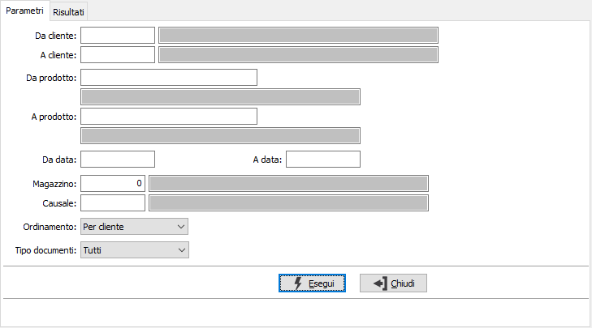
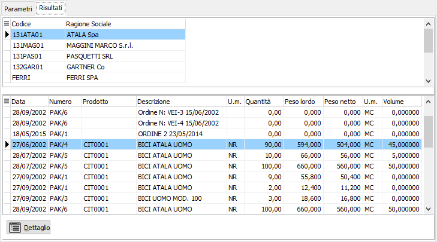
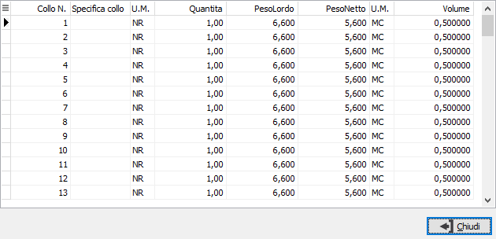

Analisi packing list
Il programma effettua la visualizzazione dei packing esistenti in archivio in base ai parametri inseriti dall’utente.
E’ possibile selezionare solo i packing da evadere oppure tutti i packing oppure solo gli evasi.
Il programma si articola su due finestre video. La prima, Parametri, consente la definizione dei parametri di analisi.

DA CLIENTE: eventuale codice del cliente, presente in anagrafica clienti, da cui si vuole iniziare la selezione di analisi. Confermando a vuoto, la selezione inizia dal primo cliente valido. Sul campo sono attive le funzioni di ricerca (F9).
A CLIENTE: eventuale codice del cliente, presente in anagrafica clienti, con cui si vuole terminare la selezione di analisi. Confermando a vuoto, la selezione termina con l’ultimo cliente valido. Sul campo sono attive le funzioni di ricerca (F9).
DA PRODOTTO: eventuale codice dell'articolo, presente in anagrafica prodotti, da cui si desidera iniziare la selezione di analisi. Confermando a vuoto, la selezione inizia con il primo prodotto valido. Sul campo sono attive le funzioni di ricerca (F9).
A PRODOTTO: eventuale codice dell'articolo, presente in anagrafica prodotti, a cui si desidera terminare la selezione di analisi. Confermando a vuoto, la selezione termina con l’ultimo prodotto valido. Sul campo sono attive le funzioni di ricerca (F9).
DA DATA: eventuale data del documento da cui deve iniziare l’analisi dei documenti relativamente ai precedenti parametri di selezione. Confermando a vuoto, l’analisi inizia con il primo documento valido.
A DATA: eventuale data del documento con cui si desidera terminare l’analisi dei documenti relativamente ai precedenti parametri di selezione. Confermando a vuoto, l’analisi si conclude con l'ultimo documento valido.
MAGAZZINO: eventuale codice del magazzino a cui si vuole restringere la selezione di analisi. Sul campo sono attive le funzioni di ricerca (F9) sulla tabella omonima.
CAUSALE: eventuale codice della causale dei packing list a cui si vuole restringere la selezione di analisi. Sul campo sono attive le funzioni di ricerca (F9) sulla tabella omonima.
ORDINAMENTO: combo box per definire i criteri di ordinamento. Valori ammessi: Per cliente; Per prodotto.
TIPO DOCUMENTI: Combo box per definire la tipologia di packing list che desideriamo analizzare. Valori ammessi: Tutti; Da evadere; Solo evasi.
Confermando tramite pressione del bottone Esegui, viene avviata la selezione e richiamata la finestra video Risultati.

La finestra video è articolata su due sezioni: la sezione superiore elenca i clienti o gli articoli selezionati in base al tipo di ordinamento scelto.
La sezione inferiore elenca invece i movimenti relativi al cliente oppure all’articolo selezionato, che è quello contrassegnato dalla freccia, a sinistra del rigo nella sezione superiore. Con il doppio clic sul rigo si accede alla manutenzione dei packing list, mentre premendo il tasto dettaglio viene visualizzato il dettaglio colli del rigo packing attivo.
